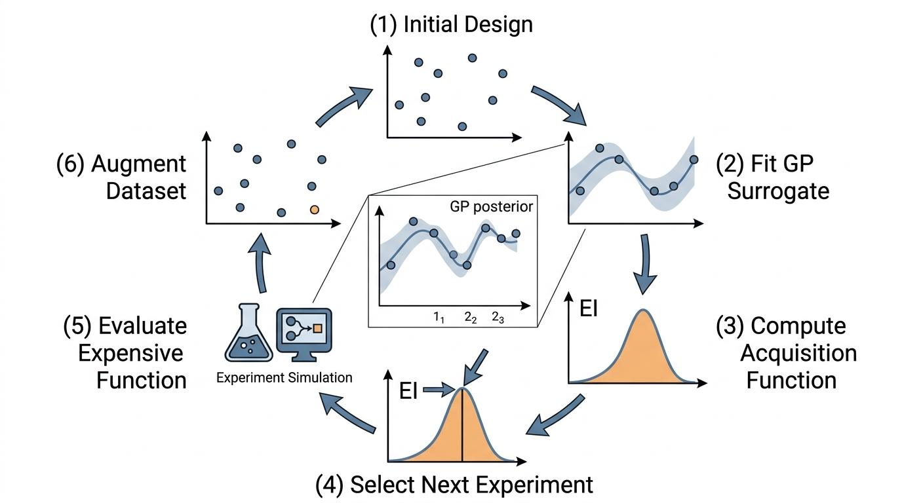

"You want me to pick the single most informative experiment out of an infinite continuum of possibilities? Let me consult my posterior."
A Gaussian Process With Excellent Covariance Skills
Active learning flips the script on data collection. Instead of gathering data uniformly or randomly and then fitting a model, active learning lets the model choose which data to collect next. More precisely, active learning is a framework in which a learning algorithm interactively queries an oracle (an experiment, a simulator, or a human annotator) to label data points it selects, rather than passively receiving a fixed dataset. The model identifies the regions of the input space where it is most uncertain, or where new data is most likely to improve the current best solution, and requests experiments there. For expensive simulations and physical experiments alike, this approach can reduce the number of evaluations needed by an order of magnitude. The mathematical engine behind this strategy is the Gaussian process, which provides not just predictions but principled uncertainty estimates that drive the selection of the next experiment.
1. The Gaussian Process as a Surrogate
What if you could carry forward every function consistent with your data, weighted by plausibility, and let that ensemble tell you where to look next? A Gaussian process (GP) does exactly that: it maintains a distribution over functions rather than committing to a single best fit \(\hat{f}\). A GP is a surrogate model, where a surrogate is a cheap-to-evaluate statistical stand-in for an expensive simulator or experiment. A GP is fully specified by a mean function \(m(\mathbf{x})\) and a covariance (kernel) function \(k(\mathbf{x}, \mathbf{x}')\):
$$f(\mathbf{x}) \sim \mathcal{GP}(m(\mathbf{x}), k(\mathbf{x}, \mathbf{x}'))$$This means that for any finite collection of input points \(\{\mathbf{x}_1, \ldots, \mathbf{x}_n\}\), the corresponding function values \(\{f(\mathbf{x}_1), \ldots, f(\mathbf{x}_n)\}\) follow a multivariate Gaussian distribution. The kernel function encodes assumptions about the function's smoothness, periodicity, and length scale.
The most commonly used kernel is the squared exponential (also called the radial basis function or RBF kernel):
$$k(\mathbf{x}, \mathbf{x}') = \sigma_f^2 \exp\left(-\frac{\|\mathbf{x} - \mathbf{x}'\|^2}{2\ell^2}\right)$$Here \(\sigma_f^2\) is the signal variance (how much the function varies overall) and \(\ell\) is the length scale (how quickly the function changes as you move through input space). Short length scales produce wiggly functions; long length scales produce smooth ones.
What. A GP surrogate provides a posterior distribution (where the posterior is the updated belief about the function after conditioning on observed data) over the unknown function. At every unobserved point, it gives you a mean (best guess) and a variance (uncertainty about that guess).
Why. Unlike the ensemble and dropout methods of Section 5.2, the GP posterior is analytically tractable. You can compute exact mean and variance without sampling, and these quantities have well-understood statistical properties. This makes GPs the natural choice for principled experiment selection.
How. Given training data \(\mathcal{D} = \{(\mathbf{x}_i, y_i)\}_{i=1}^{N}\) where \(y_i = f(\mathbf{x}_i) + \varepsilon_i\) and \(\varepsilon_i \sim \mathcal{N}(0, \sigma_n^2)\), the GP posterior at a new point \(\mathbf{x}^*\) is:
$$\mu(\mathbf{x}^*) = \mathbf{k}_*^T (\mathbf{K} + \sigma_n^2 \mathbf{I})^{-1} \mathbf{y}$$ $$\sigma^2(\mathbf{x}^*) = k(\mathbf{x}^*, \mathbf{x}^*) - \mathbf{k}_*^T (\mathbf{K} + \sigma_n^2 \mathbf{I})^{-1} \mathbf{k}_*$$Here \(\mathbf{K}\) is the \(N \times N\) kernel matrix with entries \(K_{ij} = k(\mathbf{x}_i, \mathbf{x}_j)\). The vector \(\mathbf{k}_*\) holds the \(N\) covariances between the test point and all training points, and \(\mathbf{y}\) collects the observed outputs. The posterior mean \(\mu(\mathbf{x}^*)\) weights the observations by the kernel. The posterior variance \(\sigma^2(\mathbf{x}^*)\) depends only on where the training points sit (not on their values), reflecting pure epistemic uncertainty.
When. GPs typically excel for small-to-medium datasets (up to a few thousand points in standard implementations) in low-to-moderate dimensions (often cited as roughly 10 to 20, though the practical ceiling depends on the kernel and the function's intrinsic dimensionality). For larger problems, approximate GP methods (sparse GPs, variational GPs) or the ensemble/Bayesian neural network (BNN) approaches from Section 5.2 are more practical. In short: A Gaussian process gives you not just a prediction but a calibrated map of your own ignorance, and that map is the compass for every experiment that follows.
import numpy as np
from sklearn.gaussian_process import GaussianProcessRegressor
from sklearn.gaussian_process.kernels import RBF, ConstantKernel
# A 1D function to approximate (pretend this is an expensive simulation)
def true_function(x):
return np.sin(3*x) * x + 0.5 * np.cos(7*x)
# Start with 5 observations
np.random.seed(42)
X_obs = np.array([-2.0, -0.5, 0.0, 1.5, 3.0]).reshape(-1, 1)
y_obs = true_function(X_obs.ravel())
# Fit a GP surrogate
kernel = ConstantKernel(1.0) * RBF(length_scale=1.0)
gp = GaussianProcessRegressor(
kernel=kernel,
alpha=1e-6, # near-zero noise (deterministic simulator)
n_restarts_optimizer=10,
random_state=42
)
gp.fit(X_obs, y_obs)
# Predict on a dense grid
X_grid = np.linspace(-3, 4, 200).reshape(-1, 1)
mu, sigma = gp.predict(X_grid, return_std=True)
y_true = true_function(X_grid.ravel())
print(f"Optimized kernel: {gp.kernel_}")
print(f"Log-marginal-likelihood: {gp.log_marginal_likelihood_value_:.2f}")
print(f"Max posterior std: {sigma.max():.3f} at x={X_grid[sigma.argmax(),0]:.2f}")
print(f"Min posterior std: {sigma.min():.6f} (near training points)")Optimized kernel: 3.36**2 * RBF(length_scale=0.857)
Log-marginal-likelihood: -3.62
Max posterior std: 2.845 at x=-3.00
Min posterior std: 0.000001 (near training points)Look at the GP posterior variance formula: \(\sigma^2(\mathbf{x}^*) = k(\mathbf{x}^*, \mathbf{x}^*) - \mathbf{k}_*^T (\mathbf{K} + \sigma_n^2 \mathbf{I})^{-1} \mathbf{k}_*\). The observed outputs \(\mathbf{y}\) do not appear. This means the GP's uncertainty map is determined entirely by where you have sampled, not by what values you observed there. Two completely different functions, sampled at the same input locations, produce identical uncertainty maps. This property is both a strength (you can plan a batch of experiments purely from geometry) and a limitation (it ignores the possibility that the function might be harder to model in some regions than others).
Knowing that the GP provides both a mean prediction and a variance at every point raises a natural question: what exactly does that variance represent, and can we break it into components that tell us which parts of our uncertainty are fixable?
2. Uncertainty Decomposition in Gaussian Processes
In Section 5.2 we introduced the aleatoric/epistemic decomposition of uncertainty, where aleatoric uncertainty is irreducible randomness inherent in the data (such as measurement noise) and epistemic uncertainty is reducible ignorance that shrinks as more data arrives. For a GP with observation noise \(\sigma_n^2\), the decomposition is clean and analytic:
$$\underbrace{\sigma^2_{\text{total}}(\mathbf{x}^*)}_{\text{predictive variance}} = \underbrace{\sigma^2_{\text{epistemic}}(\mathbf{x}^*)}_{\text{model uncertainty}} + \underbrace{\sigma_n^2}_{\text{noise}}$$where the epistemic component is:
$$\sigma^2_{\text{epistemic}}(\mathbf{x}^*) = k(\mathbf{x}^*, \mathbf{x}^*) - \mathbf{k}_*^T (\mathbf{K} + \sigma_n^2 \mathbf{I})^{-1} \mathbf{k}_*$$For deterministic simulators (\(\sigma_n^2 \approx 0\)), all uncertainty is epistemic: it reflects the GP's ignorance about the function in unexplored regions and shrinks to zero as more data arrives. For noisy experiments (\(\sigma_n^2 > 0\)), the aleatoric component persists no matter how much data you collect.
Common Misconception
A frequent mistake is assuming that collecting more data at a noisy location will eventually eliminate all uncertainty there. In reality, additional samples at the same input reduce only the epistemic component (the GP becomes more confident about the mean), while the aleatoric noise floor \(\sigma_n^2\) remains permanently irreducible. An acquisition strategy that keeps revisiting high-noise regions in hopes of driving total variance to zero will waste experimental budget on uncertainty that no amount of data can remove.
This decomposition has a direct consequence for experiment selection: only epistemic uncertainty can be reduced by gathering more data. An acquisition function that maximizes total uncertainty would waste budget sampling noisy regions where the function is already well-characterized. Maximizing epistemic uncertainty instead focuses on truly informative locations.
Exercise 5.3.1
A GP surrogate is fitted with observation noise \(\sigma_n^2 = 0.25\). At a test point \(\mathbf{x}^*\), the posterior predictive variance (before adding the noise term) is \(\sigma^2_{\text{epistemic}}(\mathbf{x}^*) = 0.40\). You then collect 100 additional observations at that same input location and refit the GP. After refitting, the epistemic variance at \(\mathbf{x}^*\) drops to \(0.002\). What is the total predictive variance at \(\mathbf{x}^*\) now? Would collecting another 1,000 observations at the same location reduce it further, and if so, by how much?
Hint
Total predictive variance = epistemic variance + aleatoric variance. The aleatoric component \(\sigma_n^2\) is fixed by the noise level in the data and cannot be reduced by additional sampling. After 100 observations, the epistemic component is nearly gone, so the total is dominated by \(\sigma_n^2 = 0.25\). Another 1,000 observations would shrink the epistemic piece from 0.002 toward zero, but the floor is always 0.25.
Now that we can isolate the reducible component of uncertainty, we need a principled way to convert that information into a concrete decision: which experiment should we run next?
3. Acquisition Functions: Turning Uncertainty into Decisions
In practice, choosing the wrong next experiment can waste weeks of lab time or thousands of dollars of compute on a measurement that teaches the model almost nothing. The difference between a well-chosen experiment and a random one often determines whether a 50-evaluation budget finds the optimum or misses it entirely.
An acquisition function (a scalar-valued formula that scores each candidate experiment by how useful it would be) \(\alpha(\mathbf{x})\) assigns a score to every candidate input, quantifying the value of evaluating the expensive function at \(\mathbf{x}\). The next experiment is the point that maximizes \(\alpha\):
$$\mathbf{x}^* = \arg\max_{\mathbf{x} \in \mathcal{X}} \alpha(\mathbf{x})$$An acquisition function translates a model's posterior into a single scalar score representing how useful a candidate experiment would be. It acts as a cheap surrogate objective. The expensive function (a physical experiment, a long simulation) allows only a limited number of evaluations, so each one must extract the most information or the most improvement. The acquisition function takes the GP's posterior mean and variance at a candidate point and combines them according to a formula encoding the user's goal: exploration, optimization, or a balance. The resulting score is fast to evaluate everywhere. Use an acquisition function whenever you have a fitted probabilistic surrogate and a budget constraint on evaluations. When the surrogate lacks calibrated uncertainty, fall back to space-filling designs or random search.
Three canonical acquisition functions span the exploration-exploitation spectrum:
Uncertainty sampling (pure exploration): select the point with the highest posterior variance.
$$\alpha_{\text{US}}(\mathbf{x}) = \sigma^2(\mathbf{x})$$This is the strategy encoded in the query \(\mathbf{x}^* = \arg\max \text{Var}[f(\mathbf{x})]\). It is optimal for learning the function globally but ignores any optimization objective.
Probability of improvement (PI): select the point most likely to improve upon the current best observed value \(f^+ = \min_{i} y_i\) (for minimization):
$$\alpha_{\text{PI}}(\mathbf{x}) = \Phi\left(\frac{f^+ - \mu(\mathbf{x})}{\sigma(\mathbf{x})}\right)$$where \(\Phi\) is the standard normal cumulative distribution function (CDF). PI favors exploitation: it prefers points where the GP predicts a value close to \(f^+\) with high confidence.
Expected improvement (EI): the elegant balance between PI's exploitation and uncertainty sampling's exploration. EI asks: in expectation, how much will the objective improve if we sample at \(\mathbf{x}\)?
$$\alpha_{\text{EI}}(\mathbf{x}) = \mathbb{E}[\max(f^+ - f(\mathbf{x}), 0)]$$4. Deriving Expected Improvement
The EI derivation is a beautiful application of Gaussian integrals. Since the GP posterior at \(\mathbf{x}\) is Gaussian, \(f(\mathbf{x}) \sim \mathcal{N}(\mu(\mathbf{x}), \sigma^2(\mathbf{x}))\), we can compute the expectation analytically. Define the improvement as \(I(\mathbf{x}) = \max(f^+ - f(\mathbf{x}), 0)\), and let \(z = \frac{f^+ - \mu(\mathbf{x})}{\sigma(\mathbf{x})}\). Then:
$$\alpha_{\text{EI}}(\mathbf{x}) = \mathbb{E}[I(\mathbf{x})] = \int_{-\infty}^{f^+} (f^+ - f) \cdot \frac{1}{\sigma}\phi\left(\frac{f - \mu}{\sigma}\right) df$$Substituting \(u = \frac{f - \mu}{\sigma}\) and working through the integral (splitting into a CDF term and a PDF term):
$$\alpha_{\text{EI}}(\mathbf{x}) = (f^+ - \mu(\mathbf{x})) \, \Phi(z) + \sigma(\mathbf{x}) \, \phi(z)$$where \(\phi\) is the standard normal probability density function (PDF) and \(\Phi\) is the standard normal CDF. This closed-form expression is the Jones-Schonlau-Welch (1998) result that is widely credited with catalyzing the modern field of Bayesian optimization, turning a single elegant derivation into a broad research program.
The two terms reveal the exploration-exploitation balance:
Mental Model
Think of Expected Improvement like choosing which restaurant to visit for dinner when you have a limited number of evenings. The exploitation term is the expected quality of restaurants you have already reviewed: you know that Italian place on Main Street is reliably an 8 out of 10, so going back is a safe bet. The exploration term is the appeal of an unreviewed restaurant: you have no data on the new Thai place, so it could be terrible or it could be a 10. EI combines both: it scores each restaurant not just by "will it probably be good?" (exploitation) but also by "how much could I gain from the surprise factor?" (exploration). A restaurant with a predicted rating of 7 but high variance might outscore the reliable 8, because the chance of discovering a 10 outweighs the risk of a 5. The \(\sigma \, \phi(z)\) term is precisely that "surprise upside" bonus, and it vanishes once you have visited enough times to pin down the rating.
- \((f^+ - \mu(\mathbf{x})) \, \Phi(z)\): the exploitation term. Large when the predicted mean \(\mu(\mathbf{x})\) is much better than the current best \(f^+\). This term drives the search toward regions the GP expects to be good.
- \(\sigma(\mathbf{x}) \, \phi(z)\): the exploration term. Large when the posterior standard deviation \(\sigma(\mathbf{x})\) is large. This term drives the search toward uncertain regions where surprising improvements might hide.
Step-Through: Expected Improvement Calculation
Trace through the EI formula with concrete numbers. Suppose the GP posterior at candidate point \(x = 2.0\) gives \(\mu = 1.5\) and \(\sigma = 0.8\), and the current best observed value is \(f^+ = 1.0\) (minimization).
Step 1. Compute \(z = (f^+ - \mu) / \sigma = (1.0 - 1.5) / 0.8 = -0.625\).
Step 2. Look up the standard normal CDF and PDF: \(\Phi(-0.625) \approx 0.266\), \(\phi(-0.625) \approx 0.327\).
Step 3. Exploitation term: \((f^+ - \mu) \cdot \Phi(z) = (-0.5)(0.266) = -0.133\).
Step 4. Exploration term: \(\sigma \cdot \phi(z) = (0.8)(0.327) = 0.262\).
Step 5. Total EI: \(-0.133 + 0.262 = 0.129\).
The exploitation term is negative because the GP predicts \(x = 2.0\) is worse than the current best (\(\mu = 1.5 > f^+ = 1.0\)). Yet the total EI is positive because the exploration term compensates: with \(\sigma = 0.8\), there is enough uncertainty that the true value could still beat 1.0. If we reduced \(\sigma\) to 0.1 (a well-explored region), the exploration term would shrink to \(0.1 \cdot \phi(-5.0) \approx 0\), and EI would be essentially zero.
import numpy as np
from scipy.stats import norm
def expected_improvement(X_candidates, gp_model, f_best, xi=0.01):
"""
Compute Expected Improvement acquisition function.
Parameters
----------
X_candidates : array of shape (n, d), candidate points
gp_model : fitted GaussianProcessRegressor
f_best : current best observed value (for minimization)
xi : exploration-exploitation parameter (jitter)
Returns
-------
ei : array of shape (n,), expected improvement at each candidate
"""
mu, sigma = gp_model.predict(X_candidates, return_std=True)
sigma = np.maximum(sigma, 1e-9) # avoid division by zero
z = (f_best - mu - xi) / sigma
ei = (f_best - mu - xi) * norm.cdf(z) + sigma * norm.pdf(z)
ei[sigma < 1e-8] = 0.0 # no improvement where we already know f
return ei
# Compute EI for our 1D example from Listing 5.8
f_best = y_obs.min()
ei_values = expected_improvement(X_grid, gp, f_best)
# Find the recommended next experiment
best_idx = np.argmax(ei_values)
x_next = X_grid[best_idx, 0]
print(f"Current best observation: f={f_best:.3f} at x={X_obs[y_obs.argmin(),0]:.2f}")
print(f"EI recommends next experiment at x={x_next:.2f}")
print(f"GP prediction there: mu={mu[best_idx]:.3f}, sigma={sigma[best_idx]:.3f}")
print(f"Expected improvement: {ei_values[best_idx]:.4f}")
# Decompose EI into exploitation and exploration terms
z_best = (f_best - mu[best_idx]) / sigma[best_idx]
exploitation = (f_best - mu[best_idx]) * norm.cdf(z_best)
exploration = sigma[best_idx] * norm.pdf(z_best)
print(f"\nExploitation term: {exploitation:.4f}")
print(f"Exploration term: {exploration:.4f}")
print(f"Ratio (exploit/explore): {exploitation/exploration:.2f}")Current best observation: f=-2.242 at x=3.00
EI recommends next experiment at x=2.15
GP prediction there: mu=-1.584, sigma=0.943
Expected improvement: 0.3069
Exploitation term: 0.0434
Exploration term: 0.2635
Ratio (exploit/explore): 0.16Expected improvement is the engine behind popular hyperparameter optimization tools like Optuna, Hyperopt, and Weights & Biases Sweeps. When tuning a neural network, each "experiment" (a training run) might take hours. EI guides the search to promising hyperparameter regions while still exploring surprising corners of the space. Google Vizier, Google's internal hyperparameter service (open-sourced as OSS Vizier in 2023), uses EI-based Bayesian optimization to tune models across thousands of projects. The connection to our discovery framework is direct: replacing "hyperparameter" with "experimental condition" and "validation loss" with "scientific measurement" turns the same machinery into an automated experiment designer. We formalize this in Chapter 46: Automated Experiment Design.
5. Beyond EI: Other Acquisition Functions
Expected improvement is the most popular acquisition function, but it is not always the best choice. Several alternatives target different aspects of the exploration-exploitation balance:
Upper Confidence Bound (UCB): for minimization, select \(\mathbf{x}^* = \arg\min [\mu(\mathbf{x}) - \kappa \sigma(\mathbf{x})]\), where \(\kappa\) controls the exploration weight. UCB has theoretical guarantees (Srinivas et al., 2010) and is simpler to implement than EI, but the \(\kappa\) parameter requires tuning.
Knowledge Gradient (KG): measures the expected reduction in the gap between the current best predicted value and the true optimum after one more observation. KG is myopically optimal (it maximizes the value of a single next observation, as opposed to planning multiple steps ahead), and tends to outperform EI in noisy settings, but it is more expensive to compute.
Checkpoint
So far: we have seen three acquisition strategies: uncertainty sampling (pure exploration), probability of improvement (exploitation-heavy), and expected improvement (a principled balance), plus two extensions: UCB (tunable exploration weight) and Knowledge Gradient (one-step-optimal for noisy problems). The next two methods shift focus from pointwise improvement to global information about the optimum's location.
Entropy Search and Predictive Entropy Search: maximize the expected information gain about the location of the global optimum. These methods reason about the entire posterior distribution over the optimum, not just the improvement at a single point. They are particularly effective for multi-modal functions (functions with many local optima, not to be confused with "multimodal" in the sense of multiple data types).
Thompson Sampling: draw a sample function from the GP posterior and optimize it. Repeat at each iteration. This strategy naturally balances exploration and exploitation without explicit tuning parameters, and parallelizes elegantly (draw \(B\) samples for \(B\) parallel experiments). Thompson sampling connects back to the multi-armed bandit perspective on discovery that we developed in Chapter 1.
import numpy as np
from scipy.stats import norm
def ucb(X, gp, kappa=2.0):
"""Lower Confidence Bound (for minimization)."""
mu, sigma = gp.predict(X, return_std=True)
return -(mu - kappa * sigma) # negate for argmax convention
def probability_of_improvement(X, gp, f_best, xi=0.01):
"""Probability of improvement over f_best."""
mu, sigma = gp.predict(X, return_std=True)
sigma = np.maximum(sigma, 1e-9)
z = (f_best - mu - xi) / sigma
return norm.cdf(z)
def thompson_sample(X, gp, n_samples=1, rng=None):
"""Draw function samples from the GP posterior."""
if rng is None:
rng = np.random.default_rng(42)
mu, cov = gp.predict(X, return_cov=True)
# Add small jitter for numerical stability
cov += 1e-6 * np.eye(len(X))
samples = rng.multivariate_normal(mu, cov, size=n_samples)
return samples
# Compare acquisition functions on our 1D problem
ei_vals = expected_improvement(X_grid, gp, f_best)
ucb_vals = ucb(X_grid, gp, kappa=2.0)
pi_vals = probability_of_improvement(X_grid, gp, f_best)
# Where does each recommend sampling?
acquisitions = {
"EI": X_grid[np.argmax(ei_vals), 0],
"UCB": X_grid[np.argmax(ucb_vals), 0],
"PI": X_grid[np.argmax(pi_vals), 0],
}
for name, x_rec in acquisitions.items():
print(f"{name:4s} recommends x = {x_rec:.2f}")EI recommends x = 2.15
UCB recommends x = -3.00
PI recommends x = 2.80Every acquisition function faces a chicken-and-egg problem at the very start: with zero or one observation, the GP posterior is essentially the prior, and EI is nearly constant everywhere. The first few experiments must be chosen by a space-filling strategy (such as a Latin Hypercube, a stratified sampling design that divides each input dimension into equal-probability intervals and places exactly one sample per interval, or a Sobol sequence, a low-discrepancy quasi-random sequence that fills the space more uniformly than pseudorandom points) rather than by the acquisition function. Most Bayesian optimization libraries default to 5 to 10 initial random points before switching to acquisition-guided selection. Think of it as the GP's equivalent of "I need a few data points before I can have an opinion."
With a toolkit of acquisition functions in hand, each encoding a different stance on exploration versus exploitation, the remaining step is to wire the surrogate and the acquisition function into a closed loop that iterates automatically. Figure 5.5 illustrates this loop.
6. The Active Learning Loop
Putting everything together, the active learning loop for surrogate-based discovery has the following structure:
- Initialize: Evaluate the expensive function at a small space-filling design \(\mathcal{D}_0 = \{(\mathbf{x}_i, y_i)\}_{i=1}^{N_0}\).
- Fit surrogate: Train a GP on \(\mathcal{D}_t\) (the current dataset at iteration \(t\)).
- Select next experiment: Maximize the acquisition function \(\alpha(\mathbf{x})\) over the input domain to find \(\mathbf{x}_{t+1}^* = \arg\max_{\mathbf{x}} \alpha(\mathbf{x})\).
- Evaluate: Run the expensive function (simulator or physical experiment) at \(\mathbf{x}_{t+1}^*\) to obtain \(y_{t+1} = f(\mathbf{x}_{t+1}^*)\).
- Augment: Add \((\mathbf{x}_{t+1}^*, y_{t+1})\) to \(\mathcal{D}_{t+1}\).
- Check stopping criterion: If the budget is exhausted or the acquisition function's maximum drops below a threshold, stop. Otherwise, go to step 2.
This loop is the algorithmic skeleton of Bayesian optimization and the core of the Discovery Workbench's experiment selection module. Figure 5.3.1 illustrates active learning loop with GP surrogate and acquisition function.

The from-scratch EI implementation in Listing 5.9 is about 25 lines. BoTorch provides production-grade implementations of EI, UCB, Knowledge Gradient, and many other acquisition functions, with support for batch selection, multi-objective optimization, constraints, and GPU acceleration. Ax (Adaptive Experimentation Platform), also from Meta, wraps BoTorch in a higher-level API that manages the full active learning loop, including experiment tracking and early stopping. The scikit-optimize library (skopt) offers a simpler API for standard Bayesian optimization with GPs (as of 2024, scikit-optimize is largely unmaintained; consider BoTorch or Optuna for new projects). For hyperparameter tuning specifically, Optuna provides a state-of-the-art implementation with pruning and multi-objective support.
Real-World Application: Drug Discovery at Recursion Pharmaceuticals
Recursion Pharmaceuticals uses GP-based active learning to navigate chemical search spaces containing millions of candidate compounds. Their automated microscopy platform captures cell images after compound treatment, and a Bayesian optimization loop selects which compounds to test next based on predicted bioactivity and model uncertainty. By replacing exhaustive screening with acquisition-guided selection, their system reportedly identifies promising drug candidates using a small fraction of the experiments that a brute-force screen would require (the exact reduction factor varies by assay and target).
Classical GP-based Bayesian optimization struggles beyond roughly 20 input dimensions because the kernel's length scales become hard to learn from limited data. A 2023 line of work addresses this by replacing the GP prior with pretrained transformer models. Muller et al. (2023, "PFNs4BO: In-Context Learning for Bayesian Optimization") introduced Prior-Fitted Networks that use in-context learning to perform Bayesian optimization without fitting a GP at all: the transformer, pretrained on millions of synthetic optimization tasks, directly outputs acquisition values given a sequence of past evaluations. In parallel, the BORE and TuRBO families have been extended with learned trust regions that scale to hundreds of dimensions. These approaches decouple the surrogate from the Gaussian assumption entirely, opening Bayesian optimization to problems (neural architecture search, protein engineering, molecular design) where the search space has hundreds of tunable parameters.
Try It: Build a GP-Guided Optimizer from Scratch
Use only NumPy, scikit-learn, and SciPy to build and benchmark a complete Bayesian optimization loop on a standard test function.
- Set up the target. Import the 2D Branin function:
from sklearn.gaussian_process.kernels import RBF, ConstantKernel. Definebranin(x1, x2)with its standard formula (three known global minima at ~0.398). Generate 5 initial points using a Latin Hypercube ornp.random.uniformover \([-5, 10] \times [0, 15]\). - Fit a GP surrogate. Use
GaussianProcessRegressorwith aConstantKernel * RBFkernel andn_restarts_optimizer=10. Fit to your initial observations. - Implement the EI acquisition function. Adapt the
expected_improvementfunction from Listing 5.9. Create a 50x50 grid over the domain, evaluate EI at each grid point, and select the grid point with the highest EI as the next experiment. - Run the loop for 25 iterations. At each iteration, evaluate the true Branin function at the selected point, append it to the training set, refit the GP, and record the current best observed value.
- Compare against random search. Run 25 random evaluations (uniform over the same domain) and plot "best observed value vs. iteration count" for both strategies on the same axes using
matplotlib. The GP-guided curve should converge to the global minimum significantly faster.
Lab: Acquisition Function Showdown
Goal: Compare EI, UCB, and Thompson Sampling head to head on the same optimization problem and measure how many evaluations each needs to find the global minimum.
Tools needed: Python 3, scikit-learn (GaussianProcessRegressor), SciPy (scipy.stats.norm), NumPy, matplotlib.
Setup (5 min): Define the 1D Forrester function: \(f(x) = (6x - 2)^2 \sin(12x - 4)\) on \([0, 1]\). It has one global minimum near \(x \approx 0.76\) and a deceptive local minimum near \(x \approx 0.15\). Start each strategy with the same 3 initial points drawn from a Sobol sequence (use scipy.stats.qmc.Sobol).
Experiment (15 min): Run 20 iterations of the active learning loop for each acquisition function. For Thompson Sampling, draw one posterior sample per iteration and select its minimizer. For UCB, try \(\kappa \in \{1.0, 2.0, 4.0\}\). Record the best observed value after each iteration.
What to vary: (1) The number of initial points (3 vs. 5 vs. 10). (2) The UCB \(\kappa\) parameter. (3) Add observation noise \(\sigma_n = 0.1\) and see which strategy degrades least.
What to observe: Plot convergence curves (best value vs. iteration) for all strategies on one figure. Note which strategy escapes the local minimum fastest and which, if any, gets trapped. Check whether Thompson Sampling's randomness helps or hurts compared to the deterministic EI recommendations.
Exercises
- Conceptual: Explain why the GP posterior variance \(\sigma^2(\mathbf{x}^*)\) does not depend on the observed function values \(\mathbf{y}\). What practical consequence does this have for planning a batch of experiments before any observations are collected?
- Coding: Implement the Upper Confidence Bound acquisition function for a 2D GP surrogate fitted to the Branin function (from Section 5.2, Listing 5.4). Vary \(\kappa \in \{0.1, 1.0, 5.0\}\) and plot the acquisition surface for each. At what \(\kappa\) does UCB select the same point as EI?
- Analysis: The Expected Improvement formula has a degenerate case: when \(\sigma(\mathbf{x}) = 0\), EI is zero (you already know the function there, so no improvement is expected). But what if the GP underestimates \(\sigma\) due to a misspecified kernel? Construct a 1D example where the GP uses an RBF kernel but the true function has a discontinuity. Show that EI fails to explore near the discontinuity and discuss remedies (e.g., kernel selection, adding a jitter term \(\xi\)).
What's Next
GP surrogates, uncertainty decomposition, and the expected improvement acquisition function provide all the mathematical ingredients. Section 5.4: Building an Active Learning Loop assembles these pieces into a complete, runnable system: a GP-based active learning loop that discovers the optimum of a simulated phenomenon, benchmarked against random sampling to demonstrate how intelligent experiment selection saves budget.
Bibliography
The definitive textbook on GPs, covering kernels, exact inference, approximate methods, and connections to other models. Freely available online.
The EGO algorithm paper that derived the closed-form expected improvement formula and launched modern Bayesian optimization.
Provided theoretical regret bounds for the GP-UCB acquisition function, connecting Bayesian optimization to the multi-armed bandit literature.
The standard survey on active learning, covering pool-based, stream-based, and query synthesis scenarios with diverse acquisition strategies.
A comprehensive review covering GP surrogates, acquisition functions, multi-task and multi-fidelity extensions, and real-world applications.
Production Bayesian optimization on PyTorch, supporting analytic and MC acquisition functions, batch optimization, and multi-objective problems.
Meta's high-level experimentation platform, wrapping BoTorch with experiment management, early stopping, and A/B testing support.
A widely used hyperparameter optimization library with tree-structured Parzen estimators and CMA-ES, integrated with PyTorch and TensorFlow.
The most accessible GP implementation for prototyping, with excellent documentation on kernels, noise handling, and prediction uncertainty.
An efficient method for selecting batches of experiments by penalizing the acquisition function near already-selected points.